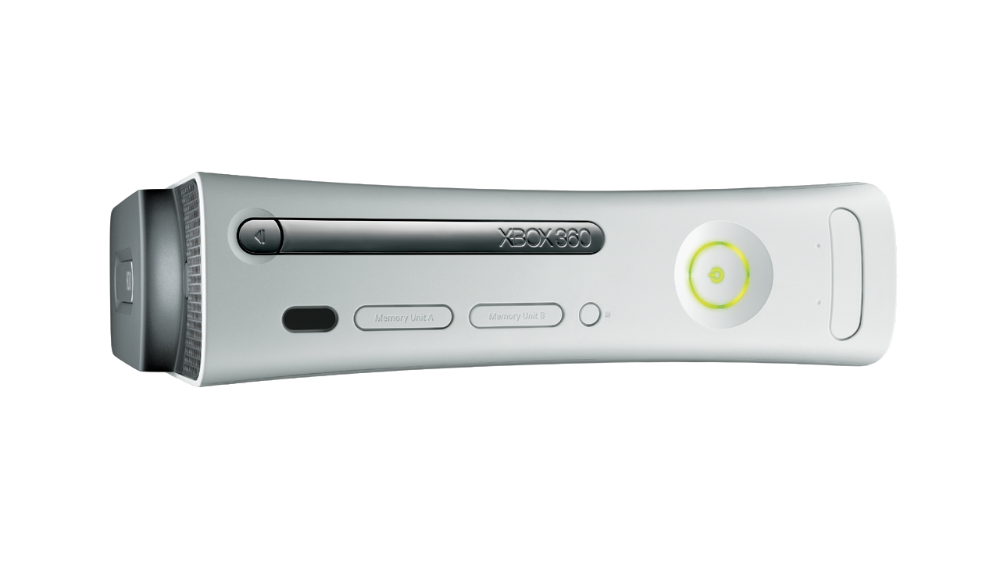

Xbox 360 20th Anniversary
Yesterday, on 22nd November 2025 marked twenty years since Xbox 360 was first released in the United States although it was released on 2nd December 2005 here in the UK it still seems fitting to mark the occasion almost twenty years since I got my Xbox 360. The hype surrounding Xbox 360 was unlike any console release before or since, here in the UK was able to watch the unveiling of the Xbox 360 in May 2005 but even before this there had been an alternative reality game of OurColony where some cropped images of the console and games were previewed. There also were pre-launch events which I managed to get along to one in the UK in Glasgow called the 360 Hour Tour which was a great chance to see the console and try out the games for myself including Perfect Dark Zero, Project Gotham Racing 3. The games looked amazing, and the console was amazing to see in person along with a selection of faceplates for the console, after the event I created a countdown calendar on paper where I crossed off the days to pick up the console which I preordered to make sure I'd get it on day one!
Launch day for the Xbox 360 of course came first in the United States twenty years ago and was able to catch much of the content, social posts and more from the Zero Hour event that was held in Mojave Desert, it was fantastic to see people getting their Xbox 360s but I had to wait a little longer to get mine. I headed to my local game store to join the queue as wanted to get mine first, I was one of the first dozen there and waited a few hours to make sure I got it, the staff even offered anyone in the first few places in the queue to get the console if they'd not preordered one, but I just wanted mine and after the wait I got to the front of the queue and got my console along with Perfect Dark Zero and Project Gotham Racing 3. I had my own Xbox website at the time where I had weekly updates with news about the Xbox 360 before and after launch, I had access to plenty of press releases and information including photos that I included throughout almost the entire lifetime of the Xbox 360, which you can still view today at cespage.com/xbox.
I was impressed with the Xbox 360 - I'd got the Xbox 360 package which came with a headset along with the remote which I used with the Media Centre Extender as had a Media Centre PC at the time which was perfect to watch online shows as well as a wireless controller and hard drive for storing games. There was also the Xbox 360 Core, later Arcade, edition which had a wired controller and required using the memory units to store games, I never got nor needed one of those as used the Hard Drive. Xbox 360 was a popular console and it was great to see it on sale in many places including a local indoor market who were using the images I'd created on my own website to sell it, it was fun to see the images I'd put together being used to market the console, I didn't mind that all, just proved they'd found my website!
I had more accessories for the Xbox 360 than any other console before or since, I got a chrome faceplate which looked amazing, had many controllers, got the larger remote control plus the steering wheel that came out later along with more games than any console I'd owned before, I even picked up the HD-DVD drive which was another HD disc standard that was a rival to Blu-ray as you could redeem quite a few films for free, I still keep them on my shelf as a reminder that not all things are successful! The Xbox 360 was on a high, but issues started to be spoken about - the red ring of death, consoles were failing and would be a few months later after the problems started my own console popped the GPU.
Xbox 360 had a major problem but Microsoft took an equally major step by replacing consoles for free, I got a replacement within a week and was gaming again with no issues, I'd not use that console for long as the Xbox 360 Elite which had more storage, along with HDMI was released, I actually picked up the Resident Evil 5 edition which was red and looked amazing! Kinect was released which was a camera-based device where could play a variety of games, I got this of course, my favourite game was one called The Gunstringer. There was also later another console revision and picked up the Halo Reach edition of this in silver with more controllers of course, I'd even got Halo ODST that came with a controller, and the Halo controllers so have more controllers than the console can use and still have them today!
The Halo Reach console would be my last Xbox 360, having owned four and after the issues were resolved I had no problems with the console at all, I bought more games like Halo 2, Halo 3 and Halo Reach and many others that I enjoyed playing for hours, including the Kinect games along with Oblivion. I think I played more on that console than any other since too! It is amazing to look back on that time and how exciting it was to hear anything about the Xbox 360 console, cover it on my own website, and get it for myself, I still get the Xbox consoles on the first day and it is exciting but nothing can quite match that experience of waiting, queuing and getting the Xbox 360!